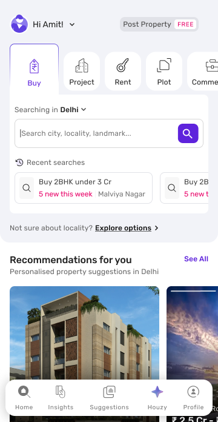
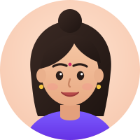

Priya
An AI conversational bot which helps you search property in natural language.
Press → or click to begin


A home buyer with clear intent. She knows what she wants, a 2 BHK near her parents in Pune, under ₹1 Cr and ready soon, and she’s about to search for it.
Preference breakdown
No single way of searching won. Buyers split almost evenly, so Houzy had to sit alongside search, not replace it.
Buyers decide with their eyes. When someone asks to see a home, Houzy answers in pictures, laid out by how many there are, so the photos do the persuading.
One rule shaped every screen: a predictable shell around unpredictable answers. The header, composer, cards and error states never change shape, so whatever the AI says lands somewhere familiar.
When a search comes back empty or a place name is unclear, Houzy never leaves the buyer stuck. It asks one short question and offers the next step.
Tap any photo and the whole set opens full screen, room by room, without leaving the chat.
Photos via Wikimedia Commons. Bathrooms: Basile Morin (CC BY-SA 4.0), Nenad Stojkovic (CC BY 2.0), Smtzzz (CC BY-SA 4.0). Kitchens: Shixart1985 (CC BY 2.0).
Houzy doesn't replace search. It runs alongside it, and every surface hands it context.
Two features where the ideal design didn't fit the release: the gallery and the property page. What shipped instead, and what testing taught us.
The one dip, the photo redirect, is the moment testing exposed. Answering photos in the chat lifted it back up.
Every answer ends one tap from a lead: on cards, brochures, the gallery and the property page. The north star is chat sessions where a buyer contacts a seller.
A search and discovery mode. Houzy at every touchpoint, on app, mobile web and desktop.
The ideal, shipped. The native gallery and a property page designed for conversation.
Deeper conversations. Streaming answers, floor plans, price trends, and memory of what the buyer already said.
That was Houzy through Priya’s eyes. The full case study goes deeper into how the conversation was built to earn a buyer’s trust.
NextArchitecting trust through conversation→